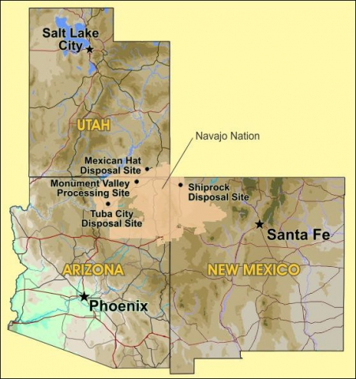
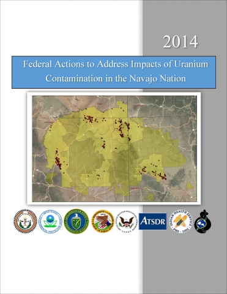

Federal agencies recently completed a second Five-Year Plan to address uranium contamination on the Navajo Nation, which follows a progress report on the first plan that was initiated in January 2007. Contributing agencies include the U.S. Environmental Protection Agency (EPA), U.S. Bureau of Indian Affairs (BIA), U.S. Nuclear Regulatory Commission (NRC), the U.S. Department of Energy (DOE), Indian Health Service (IHS), and the Agency for Toxic Substances and Disease Registry. The effort, carried out in consultation with the Navajo Nation government, focuses on the most imminent risks to people living on native lands.

While the first Five-Year Plan represents a significant start to addressing the legacy of uranium mining, there is still work to be done and the same federal agencies have collaborated to issue a second Five-Year Plan to build on the progress of the first 5 years, make adjustments based on new information, and plan the next steps for addressing the most significant risks to human health and the environment.
Federal Actions to Address Impacts of Uranium Contamination in the Navajo Nation Second Five-Year Plan Objectives
Assessment and cleanup of contaminated structures – Navajo Nation Environmental Protection Agency (NNEPA) will assess and scan up to 100 homes per year and refer those with elevated levels of radiation to EPA for follow-up action.
Assessment of contaminated water sources and provision of alternative water supplies – Expand geographic focus for providing access to safe drinking water to all six abandoned uranium mine (AUM) regions (encompassing 55 Navajo Nation chapters).
Assessment of AUM sites, including detailed assessments of those most likely to pose environmental or health problems – Conduct detailed assessments at up to 50 of the highest-priority mines.
Cleanup of the Northeast Church Rock (NECR) Mine site and additional high-priority AUM sites –
- Completion of the cleanup design for NECR Mine site in New Mexico with input from the Navajo Nation, the community, and other agencies
- United Nuclear Corporation (UNC) (former mine-site operator and partial land owner) submittal of a license amendment request to NRC for disposal of the mine waste at the UNC-owned mill site
- EPA negotiation of a consent decree with General Electric Company to begin remedy construction
- Conduct cleanup at mine sites that pose unacceptable risks to residents or the environment
Cleanup of the Tuba City, Arizona, dump – Complete a remedial investigation and feasibility study, then select and begin implementing a remedy.
Protection of human health and the environment at former uranium processing sites – Update the groundwater compliance strategy for the Shiprock, New Mexico, Disposal Site and evaluate different treatment options for the Tuba City disposal site.
Health Studies – Complete work on the Navajo Birth Cohort Study in cooperation with the University of New Mexico, the Navajo Nation Community Health Representatives Program, and Navajo Area IHS. Work with the Navajo Epidemiology Center and support efforts to evaluate various cancer case rates by residence location and known radiation exposure sources, and the health status of descendants of uranium miners/mill workers.
Support a Navajo Nation Outreach Coordinator – Through consultation with the federal agencies involved, LM has offered to support an independent outreach coordinator to improve communications with affected communities. This coordinator will assist agencies in understanding and addressing the concerns of those affected by uranium contamination on the Navajo Nation.
Plans for the Next 5 Years
LM will continue to monitor and perform long-term surveillance and maintenance (LTS&M) duties at its three Navajo Nation disposal cells (Mexican Hat, Utah; Shiprock; and Tuba City), to ensure they remain protective of human health and the environment. In addition, LM will continue the multi-year phytoremediation pilot study at the Monument Valley, Arizona, Processing Site.
A site-specific, long-term surveillance plan is written for each site outlining monitoring requirements and actions to take if any problems are identified. Annual inspections, periodic groundwater sampling, and routine maintenance are performed to ensure the integrity of each site. NRC reviews and provides comments on LM’s site reports, conducts site inspections, and concurs on any plan changes before they are implemented.
LM recently extended a cooperative agreement with the Navajo Nation to oversee site work, and will continue to consult with tribal entities to address groundwater contamination affecting the four sites since tailings cleanup was completed.
Cleanup Progress
Former Navajo Nation uranium processing sites, along with dozens of others around the nation, were contaminated during operations from the 1950s through the 1970s. Standard industry practices in effect at the time led to groundwater contamination that remains at many sites. However, the principle threat to human health at the time was radon emission from the mill tailings piles that were left uncovered as the sites were abandoned by private companies; similar to what occurred at former mine sites. DOE was charged by Congress in 1978 to address this threat by containing the mill wastes, associated contaminated structures, and areas of soil affected by milling activities, transport by wind, or other means.
Present day disposal cells are built with barriers designed to prevent radon from escaping the tailings. However, much of the groundwater contamination that resulted from mill site operation remains and groundwater monitoring continues at these sites.
DOE funds groundwater-remediation maintenance activities and LTS&M at the four Navajo Nation sites, at an annual cost of approximately $4 million. Groundwater compliance strategies are reviewed yearly with the Navajo Nation to track progress toward cleanup standards in the groundwater plumes. LM will continue to work with the Navajo Nation to address site groundwater contamination.
Goals for the Next 5 Years
- Tuba City site – LM will update the groundwater model and review conditions of existing disposal site monitoring wells. Due to the small amount of groundwater and long groundwater travel times, the disposal site’s groundwater treatment system has not performed as expected. Pumping and treating of this groundwater has been conducted for more than 10 years. Studies indicate the groundwater plume moves so slowly that it may never reach a point of exposure in Moenkopi Wash. The second Five-Year Plan includes alternatives to pumping and treating contaminated groundwater, which will be assessed.
- Shiprock site – While fulfilling the commitment in the first Five-Year Plan, DOE acquired a significant amount of data on the area’s natural flushing system and has a better understanding of the hydrology at the disposal site. During fiscal years 2015 and 2016, LM will continue working with the Navajo Nation to revise and update the site’s groundwater compliance action plan (GCAP) to include this information.
Challenges at the Shiprock site:
- Reaching an agreement on a revised strategy for enhanced natural flushing of the alluvial aquifer.
- Evaluating the need for continued active remediation on the terrace.
- Continuing a robust monitoring and technical data collection program to understand system performance.
- Clearly communicating environmental risks to community members and others interested in or affected by the site.
LM will work with the Navajo Nation to revise the groundwater compliance strategy by proposing new alternatives for the Shiprock site, and will continue its evaluation of naturally occurring groundwater constituents—such as those at Many Devils Wash—which appear to have been inaccurately attributed to uranium milling.
- NRC will conduct oversight activities at the four Uranium Mill Tailings Radiation Control Act (UMTRCA) Title I sites on the Navajo Nation, in accordance with the agency’s regulations, the Atomic Energy Act, and UMTRCA. After LM updates the compliance strategies for the Shiprock and Tuba City sites, NRC will review and concur, as appropriate, on any revisions being considered for groundwater compliance activities.
NRC has reviewed and provided comments on the phytoremediation pilot project at the Monument Valley site and if LM proposes to revise the GCAP for the site, NRC will review and, if appropriate, concur on the revised plan.
- LM and IHS will hold joint workshops to inform the public of the risks of radiation from uranium mill tailings after remediation.
- LM will work with the Navajo Nation to create and implement an outreach and communication plan that includes activities such as continued work with Diné College, support of summer interns, and development of an online media page. Our actions will be integrated with the broader interagency communication effort.
- LM will continue to support Navajo Nation EPA efforts to remediate mill-site-related contamination near the Tuba City mill site and will open the Grand Junction, Colorado, Disposal Site for placement of the radiologically contaminated material. LM will also provide technical support for remediation and hauling of the material for final disposal.